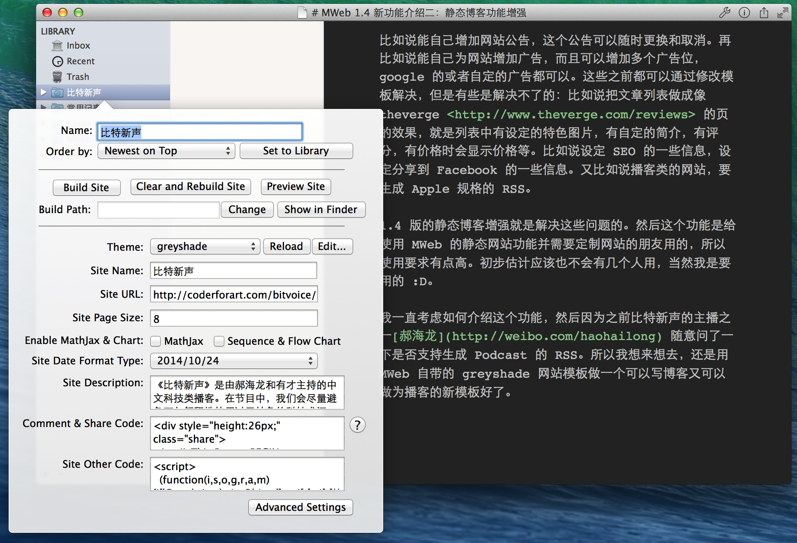
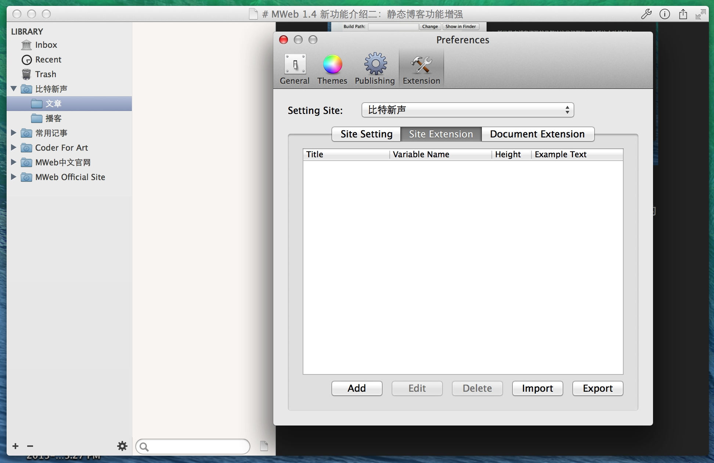
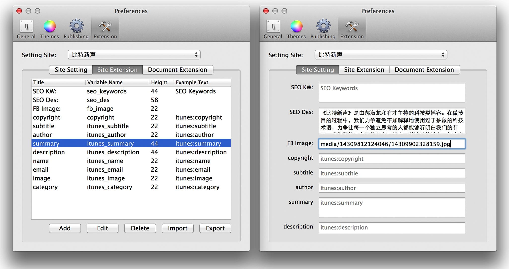
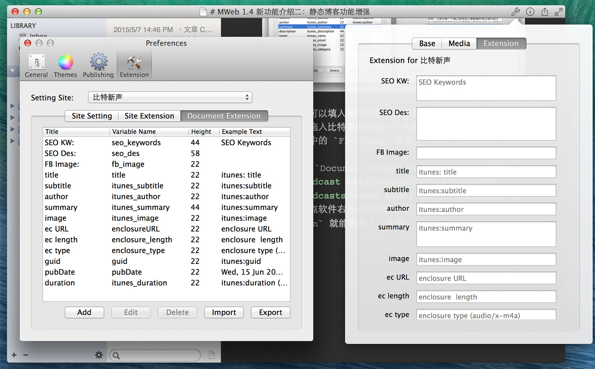
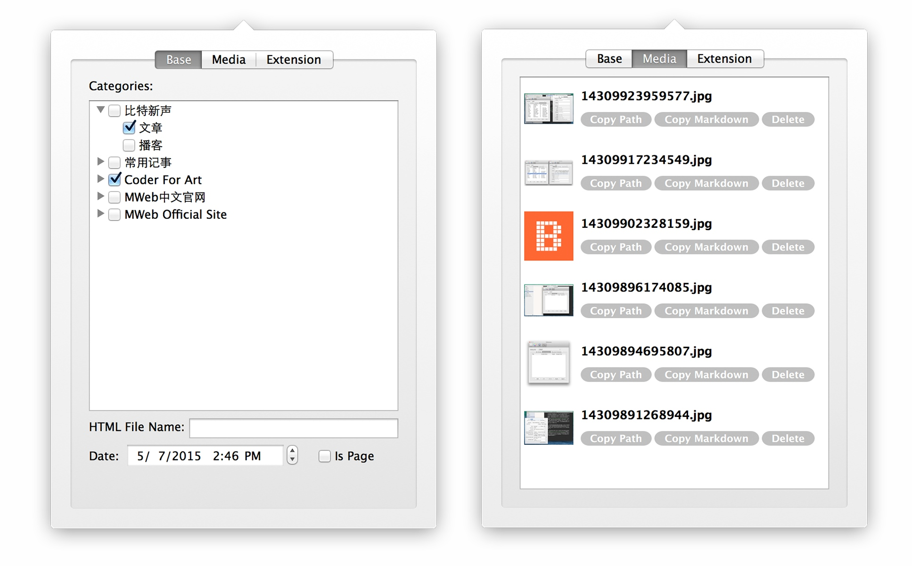

MWeb 比较有特色的是一键生成静态博客功能，然后从 MWeb 最开始规划要做静态博客生成功能时，我就希望 MWeb 的静态博客生成功能在易用的同时，还要有很强大的扩展性。
比如说能自己增加网站公告，这个公告可以随时更换和取消。再比如说能自己为网站增加广告，而且可以增加多个广告位，google 的或者自定的广告都可以。这些之前都可以通过修改模板解决，但是有些是解决不了的：比如说把文章列表做成像 theverge http://www.theverge.com/reviews 的页的效果，就是列表中有设定的特色图片，有自定的简介，有评分，有价格时会显示价格等。比如说设定 SEO 的一些信息，设定分享到 Facebook 的一些信息。又比如说播客类的网站，要生成 Apple 规格的 RSS。
1.4 版的静态博客增强就是解决这些问题的。我一直考虑如何介绍这个功能，然后因为之前比特新声的主播之一 郝海龙 随意问了一下是否支持生成 Podcast 的 RSS。所以我想来想去，还是介绍用 MWeb 自带的 greyshade 网站模板做一个可以写博客又可以做为播客的新模板好了。
这个新模板的 Demo 网址是：http://coderforart.com/bitvoice/，Podcast RSS 为：http://coderforart.com/bitvoice/podcast-atom.xml。 一般情况下只要到这个网址体验一下，并看一下《音乐《梁祝》及 MWeb 静态博客功能增强的使用体验》这篇文章即可，因为下边的内容是跟自定模板有关。
下面正式开始做这个新模板。
首先在 MWeb 中新增一个静态网站分类，名为比特新声。然后设置如下，我是想放在我的博客中做 Demo，所以网址为：http://coderforart.com/bitvoice/。评论和分类代码、GA 代码都跟 coderforart 一样。

点上图中最下边的 Advanced Settings 后会出来如下图的网站扩展设置。

一开始打开时，Site Setting 这个 Tab 是没有内容的，可以看到 MWeb 支持整个网站的字段扩展（Site Extension）和网站所属文档的字段扩展（Document Extension）。
如下图，我在 Site Extension 这个 Tab 根据 Apple Podcast RSS 自定了一些必要字段，然后切到 Site Setting 这个 Tab，就会看到按照自定的字段生成可以输入的文本框了。

如右边，我可以填入相关文案。然后如果有图片怎么办，简单的办法是打开比特新声分类内的一个文档，直接把图拖入编辑器中，从生成的 Markdown 语法中取其地址贴上就好。如上图右边的图中的 Fb Image 字段。
然后我也在 Document Extension 这个 Tab 也根据 Apple Podcast RSS 自定了一些必要字段，这些字段可以点软件右上角的设置按钮，并点第三个 Tab Extension 就能看到了按自定字段生成的可输入文本框了，如图。

这样的话，如果想新增新一期播客，就点开第三个 Extension Tab，填入一些这一期播客的相关信息即可。如果新增的文档只是普通文章，则可以不用管扩展的信息。
下图是关于 Base Tab 和 Media Tab 的情况。

Media Tab 会列出所有你引入到当前文档中的图片、附件等等。比如要增加一张某期的播客的封面图片，文章里用不到，但是 Extension Tab 里要填入，就可以先把图拖入编辑器内，然后删除，再点 Media Tab 就会看到所拖入的图了，点 Copy Path 然后贴到 Extension Tab 的某字段即可。
字段设置好了，下面要开始修改 greyshade 网站模板了。目前看来只需要为属于播客的文章增加一个播放器，让它可以播放 MP3。然后修改 RSS，让 RSS 按 Apple 播客的格式即可。
以下为修改模板的内容，建议先参考 自定网站或博客主题简单说明。
首先增加播放器，我随便找了一下，看到 http://www.schillmania.com/projects/soundmanager2/demo/bar-ui/ 这个播放器不错，所以就决定用这个了，首先复制 greyshade 模板，并重命名为：podcast-greyshade。把 soundmanager 的相关代码放到 asset/soundmanager 中。然后打开 header.html 文档，在上面增加 soundmanager2 播放器的代码，大概是这样：
<link href="asset/soundmanager/css/bar-ui.css" media="screen, projection" rel="stylesheet" type="text/css">
<script type="text/javascript" src="asset/soundmanager/soundmanager2-jsmin.js"></script>
<script type="text/javascript" src="asset/soundmanager/bar-ui.js"></script>
<script>
soundManager.setup({
preferFlash: false,
onready: function() {
}
});
</script>
因为我需要在文章列表和单篇文章都支持播放功能，所以为 category.html 和 post.html 增加播放支持。代码大概如下（我只选关键代码）。
{% if post.ext_enclosureURL.length %}
<div class="sm2-bar-ui compact full-width">
....
<div class="sm2-inline-duration">{{ post.ext_itunes_duration }}</div>
<div class="sm2-playlist-wrapper">
<ul class="sm2-playlist-bd">
<li><a href="{{ post.ext_enclosureURL }}"><b>{{ post.ext_itunes_author }}</b> - {{ post.ext_title }}</a></li>
</ul>
</div>
...
</div>
{% /if %}
下面解释一下上面这段代码。
MWeb 中 Site Setting 设置的所有值会传到所有模板页，比如说要输出上面设置的 SEO Des 的值，用 {{ext_seo_des}} 即可。可以看到，规则是： ext_ + variable Name 。然后用软件右上角第一个按钮设置的文档中的 Extension 的值，会传到所有 文档对象变量 中，如上面代码，文档对象变量为 post，访问规则为 post.ext_ + variable Name。 然后请注意 {% if post.ext_enclosureURL.length %} {% /if %} 这种写法，这是为了判断这文章是否有设置了播客的相关值，有设置，说明这文章为播客文章。
下面介绍一下如何增加输出 Apple 支持的播客的 RSS 格式。
MWeb 一般情况下只生成全站文章的 RSS，名字为 atom.xml。然后 MWeb 为了满足扩展需要，增加了另外的规则，为：如果网站模板中存在有 分类的 HTML File Name 的值 + -atom.xml 这样的模板文档，则会为这个分类用 分类的 HTML File Name 的值 + -atom.xml 这个模板生成名为 分类的 HTML File Name 的值 + -atom.xml 的 RSS。
如上面，我增加了两个子分类：文章和播客。然后我设置了播客子分类的 HTML File Name 为 podcast。然后我在网站模板中也增加了名为 podcast-atom.xml 的模板，下面是这个模板的内容。
<?xml version="1.0" encoding="UTF-8"?>
<rss xmlns:itunes="http://www.itunes.com/dtds/podcast-1.0.dtd" version="2.0">
<channel>
<title><![CDATA[{{ siteName }}]]></title>
<link>{{ siteURL }}</link>
<language>zh-CN</language>
{% if ext_copyright.length %}
<copyright>{{ ext_copyright }}</copyright>
{% /if %}
{% if ext_itunes_subtitle.length %}
<itunes:subtitle>{{ ext_itunes_subtitle }}</itunes:subtitle>
{% /if %}
{% if ext_itunes_author.length %}
<itunes:author>{{ ext_itunes_author }}</itunes:author>
{% /if %}
{% if ext_itunes_summary.length %}
<itunes:summary>{{ ext_itunes_summary }}</itunes:summary>
{% /if %}
{% if ext_itunes_description.length %}
<description> {{ ext_itunes_description }} </description>
{% /if %}
<itunes:owner>
{% if ext_itunes_author.length %}<itunes:name>{{ ext_itunes_author }}</itunes:name>{% /if %}
{% if ext_itunes_email.length %}<itunes:email>{{ ext_itunes_email }}</itunes:email>{% /if %}
</itunes:owner>
{% if ext_itunes_image.length %}
<itunes:image href="{{ ext_itunes_image }}" />
{% /if %}
{% if ext_itunes_category.length %}
<itunes:category text="{{ ext_itunes_category }}"/>
{% /if %}
{% for p in posts %}
{% if p.ext_enclosureURL.length %}
<item>
<title>{{ p.ext_title }}</title>
<itunes:author> {{ p.ext_itunes_author }}</itunes:author>
<itunes:subtitle> {{ p.ext_itunes_subtitle }} </itunes:subtitle>
<itunes:summary><![CDATA[
{% if p.ext_itunes_summary.length %}
{{ p.ext_itunes_summary }}
{% else %}
{{ p.content }}
{% /if %} ]]>
</itunes:summary>
<itunes:image href="{{ p.ext_itunes_image }}" />
<enclosure url="{{ p.ext_enclosureURL }}" length="{{ p.ext_enclosure_length }}" type="{{ p.ext_enclosure_type }}" />
<guid>{{ p.ext_guid }}</guid>
<pubDate>{{ p.ext_pubDate }}</pubDate>
<itunes:duration>{{ p.ext_itunes_duration }}</itunes:duration>
</item>
{% /if %}
{% /for %}
</channel>
</rss>
至此，podcast-greyshade 这个新模板已经完成了，增加了播放器支持和把所有播客文章生成为 Apple 播客格式的 RSS。
podcast-greyshade 这个网站模板已传到 github：https://github.com/oulvhai/MWeb-Themes/tree/master/podcast-greyshade
使用 podcast-greyshade 这个网站模板的 Demo 的网址：http://coderforart.com/bitvoice/。我只增加了两篇播客文章。然后 Apple 规格的 RSS 输出网址为：http://coderforart.com/bitvoice/podcast-atom.xml